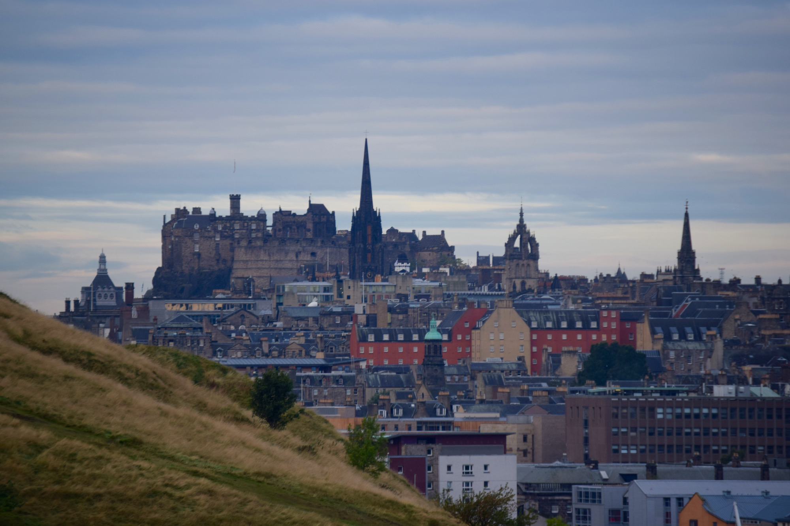

Edinburgh, Scotland
By MARYROSE KULICK
My flat sits on the corner of Sciennes in Edinburgh, Scotland.
Take a left out the front door and soon you’ll hit the easternmost corner of the Meadows, a vast expanse of green grass that – on sunny days – lures barbecuers, dog owners and meanderers.
From there, turn right and walk down two blocks to reach Clerk Street, a bustling avenue for window shoppers and errand runners.
My mom and I took this route on her last night with me in Scotland’s capital, a place known for its spire-top churches and dismally cold winters. After a day of touring the city, we turned left onto Clerk Street, and we found ourselves inside a pub-style restaurant: The Abbey.
My mom had chicken curry and rice. I had steak and potatoes. We chatted about which ATMs I should use in the city and how my brother had just moved into his first college dorm. Even though we were halfway across the world, life was still normal – conversations still familiar. But shortly the steak on my plate diminished to just a morsel, and then it was completely gone.
After exiting the pub, my mom decided to head back to her hotel to prepare for her morning flight back to the States. So we said our goodbyes, parted ways and she was gone.
And I was alone. Oh boy.

MARYROSE KULICK/daily bruin
No one really considers the concept of homesickness when they plan extravagant trips to new and strange countries. At least, I didn’t.
Sure, the how-to-prepare-for-life-abroad videos tell you all the warning signs, but I always thought I would be too busy, too engrossed with what was around me, to even notice that I missed home.
But as the new school year started getting underway – because yes, studying abroad does include studying – the thrill of exploring Edinburgh’s cobblestone streets, thrifting through designer cashmere and woolen shops and experimenting with the flavors of haggis and black pudding quickly began to die down.
When I no longer had as much time for sightseeing, even the smallest things would make that horrible lonely feeling sink into my gut.
Grocery shopping, for instance – I’ve never had to shop for only myself, and I found myself panicking over what to buy, not knowing where to find tortillas and questioning why eggs in the United Kingdom don’t have to be refrigerated.
On multiple occasions, I made enough food for two or three but had no one to share it with. This isn’t to say I’ve been completely isolated from other human beings – just that no one told me how much time I’d be spending on my own.
But one night, that itching feeling, that nagging sensation that told me to get out of California and study abroad in the first place, said, “Hey. No.” It refused to let me sit idly in my flat making way too much food.

MARYROSE KULICK/daily bruin
So the next morning, I woke up at 5:40 a.m., got dressed and ate some yogurt. By precisely 6:08 a.m., I was out the door and turning left.
When I hit the Meadows, I turned right, crossed the intersection and headed toward Clerk Street. The sun had yet to rise, which was just what I wanted.
Few people were out, other than the occasional shop owner preparing for the day. I passed a grocer sweeping broken glass off the sidewalk and nodded good morning to her while my feet moved briskly beneath me; my breath fogged my vision.
I was both nervous and excited – ahead, I could see the faint outline of a mountain looming over the still-sleeping city.
When I came to the edge of town, I made my way through an open gate into the wooded section of Holyrood Park. The street lamps were all but gone and I could barely see my feet below me, but I knew two paths were laid out before me.
By the light of my iPhone, I took the path to the left. My heart bounced around in my chest, invoking memories of counselors telling me not to walk alone at night. Did that still count at 6:30 in the morning?
I quickly made it out to the street that surrounds Arthur’s Seat, a long-extinct volcano and Holyrood Park’s most prominent feature. Already the sky was starting to get brighter, and I grew nervous at my pace. I had about 45 minutes to make it to the top for the sunrise at 7:30 a.m. – plenty of time, but my feet quickened to almost a run.
Halfway up the hill, my lungs were sucking in cold air and my nose was running, but the speed of my movement kept me warm. By then, the sky was light enough so that I no longer needed my phone to see the path. Stopping to switch it off, I looked back to assess my progress, and laid out behind me were hundreds of twinkling Edinburgh lights. They bounced off the Firth of Forth to the right, and it was almost serene enough for me to stop there and watch them slowly disappear.
As I kept climbing, I envisioned being the only one at the summit – the only one in the world to see the sunrise from this peak on this day, ever.
That, of course, was not the case. Two people had made it up the 250-meter summit before me, which was fine. Two more people joined us soon after. I perched myself at the highest point of Arthur’s Seat and waited – I had 15 minutes to spare.
I sat and watched the skyline. The subtle colors of dawn created a soft, peachy hue. The lights from the city below us were still twinkling – and then, right on schedule, the sun came up.
First, the red light bouncing off of the clouds slowly began to intensify, crafting abstract jagged lines that wove themselves throughout the sky. Then, ever so slowly – as the sun is never in a rush – a bright orb emerged, washing the hilltop and the surrounding city in orange light.
MARYROSE KULICK/daily bruin
My companions and I all pulled out our cameras to capture the moment. While the earth’s rotation makes this phenomenon a natural daily occurrence, we were still the only five people on Earth who could say we witnessed the sunrise on Oct. 9, 2015, from the top of Arthur’s Seat.
So why did I decide to study abroad?
Like everyone else, I did it for the culture, the risk, the adventure. But for the most part, I did it for the Scottish sunrise.